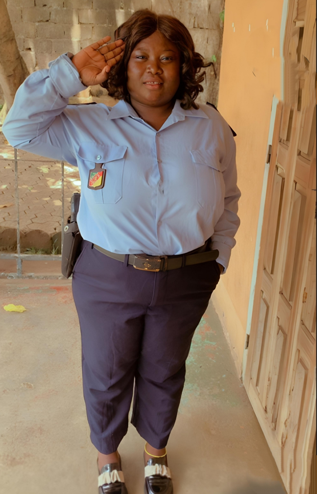

🎬 Portrait de Mapfoundour Simgba Christiane – Une Preuve Vivante de Passion et de Détermination
Nom complet : Mapfoundour Simgba Christiane
Date de naissance : 17 février 1999
Nationalité : Camerounaise
Ville de résidence : Yaoundé
🎭 Un Parcours Commencé Très Tôt
Mapfoundour Simgba Christiane débute sa carrière dans le cinéma en 2019. Grâce à une formation artistique préalable, elle s’engage dans divers projets tels que des clips et la web-série "Les enfants turbulents". Ces premières expériences forgent sa passion et confirment sa vocation pour le 7e art.
🚨 Un Rôle Fort dans la Série Héritiers
Dans la série en cours de production "Héritiers" de Planète Africa, Christiane interprète le rôle d’Esther, commissaire au sein du CCDP (Commissariat de la Décongestion Pénale). Elle y incarne avec force et intensité une femme de pouvoir, rigoureuse et engagée.
🎬 « Héritiers est pour moi une occasion de prouver une fois de plus que le cinéma, c’est ma vie. »
❤️ Une Vocation Animée par l'Amour du Métier
Pour Christiane, le choix de devenir actrice s’impose naturellement. « Parce que je l’aime », dit-elle simplement. Sa sincérité et son dévouement transparaissent dans chacun de ses rôles.
📢 « Si tu choisis le cinéma, sache que tu dois te sacrifier pour atteindre la popularité et le respect dans le métier. »
🌟 Un Message Inspirant à la Jeunesse
À tous les jeunes artistes et au public, Christiane adresse un mot de gratitude :
🙏 « Merci de croire en moi. »
Planète Africa se réjouit de compter dans ses rangs une actrice aussi engagée et talentueuse. Son parcours ne fait que commencer, mais déjà, Christiane incarne l’espoir d’un cinéma africain plus fort et plus vivant.